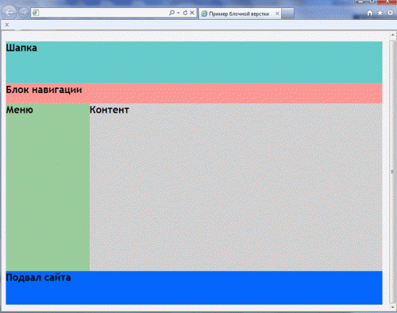

Additional task
Поэкспериментируйте с элементами, появившимися в стандарте HTML5.
Task 2
Возьмите пример страницы с предыдущего урока и сверстайте ее с использованием тегов семантической разметки.

Task 3
Создайте страницу, на которую добавьте видео, и задайте ему размеры.
Предусмотрите возможность использования нескольких источников для видео, если браузер не поддерживает тот или иной формат.
Task 4
Создайте страницу, на которую добавьте аудио дорожку.
Предусмотрите возможность использования нескольких источников для аудио, если браузер не поддерживает тот или иной формат.